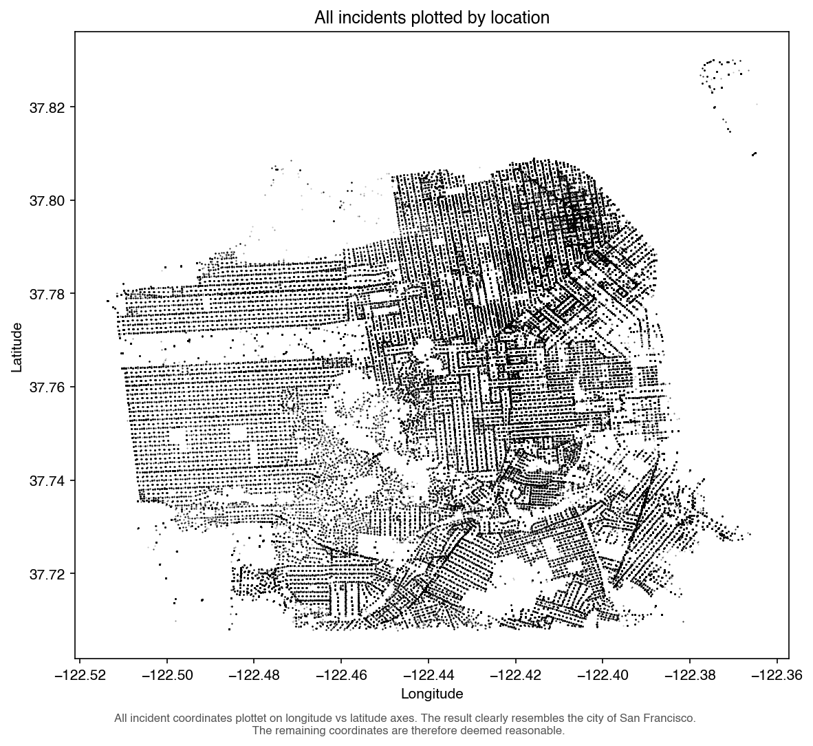
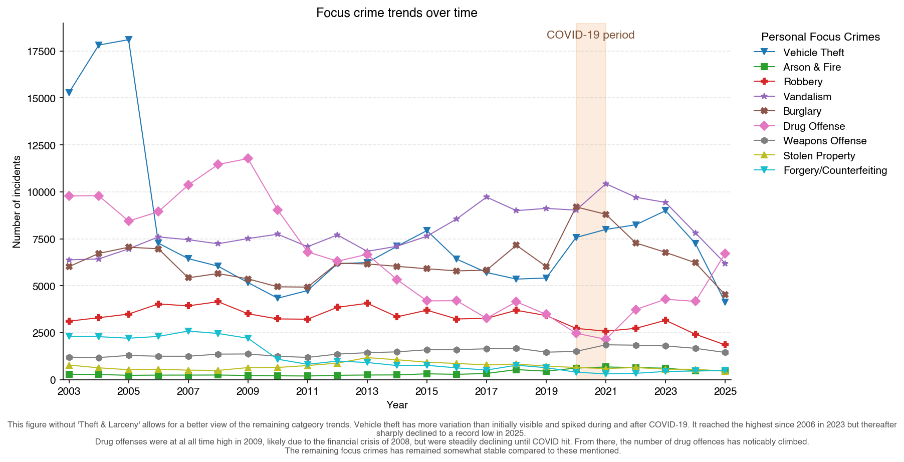
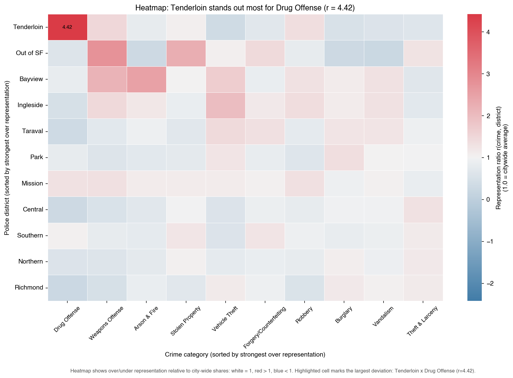
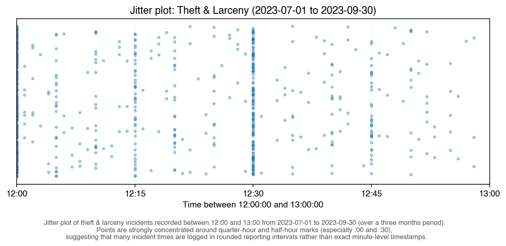

All Incidents by Location
A citywide snapshot showing where incidents cluster geographically.
Jump to visualizationThis project explores how crime in San Francisco changes across neighborhood and time. The page is structured as a scroll journey: first the focus crimes, then an overview of visualizations, and finally each figure shown one by one with short context.
Scroll down to begin.
These are the categories I focus on throughout the analysis.
Quick links to all plots shown further down the page.
A citywide snapshot showing where incidents cluster geographically.
Jump to visualizationA temporal view of how selected categories rise and fall over years.
Jump to visualizationA matrix comparison of crime category intensity across districts.
Jump to visualizationA detailed spread view that highlights variation in theft incidents.
Jump to visualizationAn interactive district map of over- and under-representation.
Jump to visualizationA point-based map to explore local hotspots and street-level clusters.
Jump to visualizationAn animated heatmap tracking how theft concentration changes by month.
Jump to visualizationAn hourly profile showing behavior shifts between different years.
Jump to visualizationEach figure below includes a short explanation and a direct link to open it on its own page.
An overview map-like scatter of incidents that gives a first impression of where crime concentrates geographically.

Open full visualizationA time-series perspective showing how selected categories move through years and where notable shifts appear.

Open full visualizationA matrix-style heatmap that compares category intensity across police districts for pattern spotting.

Open full visualizationA granular view of theft and larceny variation that reveals spread and local concentration points.

Open full visualizationAn interactive district-level ratio map that highlights where vehicle theft is over- or under-represented.
Open full visualizationAn interactive point map focused on drug incidents to inspect local hotspots and urban clustering.
Open full visualizationAn animated heatmap showing how theft density moves over time across the city.
Open full visualizationAn interactive hourly profile by year, useful for comparing temporal behavior between years.
Open full visualization